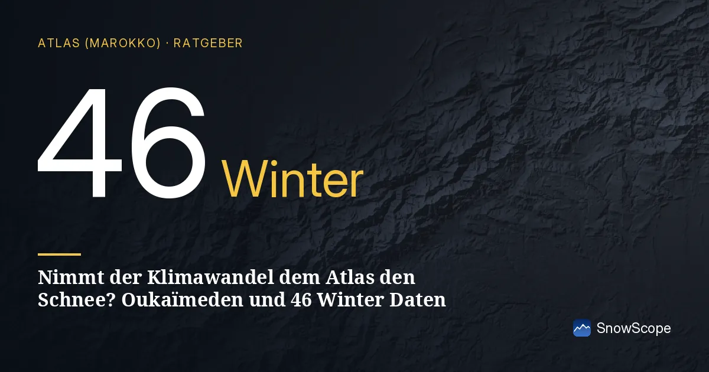

Nimmt der Klimawandel dem Atlas den Schnee? Oukaïmeden und 46 Winter Daten
Der Atlas hält Schnee in einem trockenen Klima, in dem ein einzelner Sturm die Saison füllen oder ein milder Winter sie auslöschen kann. Über 46 Winter zeigt sich auf den höchsten Gipfeln ein klares Muster: die Schneesaison wird kürzer. Über 2.500 m, wo Oukaïmeden liegt, haben Winter heute etwa 17 Tage weniger mit Schneedecke als vor einer Generation.
Die Live-Schneeprognose für Oukaïmeden in der SnowScope-AppSchneehöhen, Pulverschnee-Alarme und 3D-Karte, gratis.
Was wir gemessen haben
SnowScope hat neun Orte in den drei Atlas-Skigebieten – Oukaïmeden, Michlifen und Jbel Hebri – von 1.870 m bis 3.258 m untersucht, für Winter von 1980-81 bis 2025-26. Wir haben Schneetage gezählt (Tage mit mindestens 5 cm Schnee am Boden) und die tiefste Schneedecke jeder Saison erfasst. Die Daten stammen aus einer Rekonstruktion früherer Winter, korrigiert für die Höhe jedes Ortes.
Echter Schnee an einem einzelnen Punkt kann variieren; Saharastaub, Windverfrachtung und lokale Topografie spielen eine Rolle. Aber mit 46 Wintern und neun Messpunkten über drei Resorts entstehen klare Muster.
Die höchsten Gipfel verlieren ihre Saison
Über 2.500 m hatte ein typischer Winter in den ersten 15 Jahren unserer Daten 145 Schneetage und in den letzten 15 Jahren 128 – ein Rückgang von 12 %. Noch aussagekräftiger: Der Rückgang beträgt etwa 8,8 Schneetage pro Jahrzehnt und zeigt das gleiche Abwärtssignal an allen drei Hochlagen-Messpunkten, die wir untersucht haben. Die tiefste Schneedecke ist auch gefallen, von 102 cm auf 92 cm, obwohl diese Veränderung in den Daten weniger sicher ist.
Warum zeigt sich das zuerst auf dem Gipfel? Über 2.500 m bleibt Schnee oft monatelang liegen, was eine verkürzte Saison leicht erkennbar macht. Die Atlas-Sonne ist intensiv und die Luft trocken; ein paar Grad extra Wärme im Frühling verkürzt die Saison merklich. Tiefer unten, wo Schnee selten Wochen hält, wäre eine solche Verschiebung unter den größeren Jahr-zu-Jahr-Schwankungen unsichtbar.
Tiefere Lagen sind schwerer zu deuten
Zwischen 1.500 m und 2.500 m ist Schnee spärlich. Ein typischer Winter hat nur wenige Wochen mit 5 cm am Boden. Hier ist das Bild gemischt. Der Trend deutet auf einen Verlust von etwa 1,7 Schneetagen pro Jahrzehnt hin, aber der Vergleich der ersten 15 Winter mit den letzten 15 zeigt wenig Veränderung, und kein einzelner Punkt erreicht die Schwelle für ein klares Signal. In diesen Höhen prägen ein paar große Stürme jeden Winter so stark, dass 46 Jahre an Daten Klimaveränderung noch nicht von natürlicher Variabilität trennen können.
Im Atlas ist die Höhe entscheidend: die Grenze zwischen vorhersehbarem Rückgang und Wetterchaos liegt um 2.500 m.
Einige Saisons sind Ausreißer
Atlas-Winter schwanken wild. Über die neun Orte haben Mediane von nur 4 Schneetagen in 2023-24 bis 100 in 2008-09 reicht. Die schlechteste Saison der gesamten 46-jährigen Datenreihe war kürzlich: 2023-24. Doch 2025-26, das nur Monate vor der Aufzeichnung dieser Daten endete, rangierte mit 48 Schneetagen unter den fünf schneereichsten. Zwei der drei schlechtesten Winter überhaupt stammen aus den letzten vier Jahren, aber die schlimmste und beste Saison sind immer noch um einen Faktor 25 getrennt.
Was den Atlas-Schnee antreibt
Forscher binden Atlas-Schnee an Druckmuster über dem Atlantik, hauptsächlich die Nordatlantische Oszillation. Die Berge speisen die Wasserversorgung stromabwärts: Schneeschmelze füllt Flüsse und Grundwasser für die Ebenen von Marrakesch. Studien projizieren, dass sich das Rheraya-Tal unter dem Toubkal bis Mitte des Jahrhunderts um 1,4 bis 2,6 °C erwärmt und 22 % bis 31 % weniger Winterniederschlag sieht. Der Flussfluss könnte um 19 % bis 63 % fallen, vor allem weil Schnee kürzer liegen bleibt. Im kontinentalen Maßstab ist das Mittelmeer ein Klimawandel-Hotspot, in dem lokal bis zu 40 % der Winterniederschläge verschwinden könnten.
Was das für Skifahrer jetzt bedeutet
Oukaïmeden bleibt das einzige Atlas-Resort hoch genug für eine zuverlässige Schneesaison. Der Trend zeigt, dass es weniger zuverlässig wird, aber von Jahr zu Jahr kannst du immer noch gute Bedingungen erwischen. Sturm-zu-Sturm-Veränderungen spielen eine größere Rolle als die langfristige Verschiebung: Schau SnowScope nach jedem Wintersturmsystem an, und plane, innerhalb von Tagen nach Schneefall zu fahren, denn die Schmelze geht schnell. Tiefere Resorts wie Michlifen hängen von kalten Stürmen ab, die die Schneegrenze sinken lassen; schau immer vorher die Vorhersage an.
Tipps für Skifahrer
- Beobachte die Live-Schneekarte genau nach jedem Atlantiksturm, der den Atlas erreicht; die Bedingungen ändern sich schnell.
- Fahr innerhalb von zwei oder drei Tagen nach Schneefall: In diesen Höhen schmelzen Sonne und trockene Luft die Decke zwischen Stürmen schnell ab.
- Oukaïmeden auf 2.660 m ist das einzige Resort zuverlässig über der schrumpfenden Zone; tiefere Gebiete brauchen ein kaltes, nasses System.
- Bevor du ins Gelände oder auf den Toubkal gehst, frag lokale Bergführer nach Schneestabilität und Steinschlaggefahr; Marokko hat kein öffentliches Lawinenbulletin auf SnowScope.
- In trockenen Jahren wie 2023-24 kann die ganze Saison dünn sein; Steine können unter flacher Decke lauern.
Zu diesen Zahlen
Die Schneehöhen der Skigebiete sind der meiste Schnee in den oberen Hängen am angegebenen Tag; es sind Schätzungen für eine Fläche, keine Messung an einem Punkt. Prognosen können sich ändern. Lies vor dem Freeriden immer den offiziellen Lawinenlagebericht.
Diesen Bericht zitieren
Für Forschung, Lehre oder Presse: Zahlen und Grafiken sind unter CC BY 4.0 mit dieser Quellenangabe frei nutzbar.
SnowScope (2026), Nimmt der Klimawandel dem Atlas den Schnee? Oukaïmeden und 46 Winter Daten, https://snowscope.app/blog/de/2026/11/atlas-snow-climate-change-oukaimeden-46-winters.html, abgerufen am 2026-11-09
SnowScope (Atlas Labs). (2026, November 9). Nimmt der Klimawandel dem Atlas den Schnee? Oukaïmeden und 46 Winter Daten. SnowScope snow reports. https://snowscope.app/blog/de/2026/11/atlas-snow-climate-change-oukaimeden-46-winters.html
BibTeX
@misc{snowscope2026atlassnowclimatechangeou,
author = {{SnowScope (Atlas Labs)}},
title = {Nimmt der Klimawandel dem Atlas den Schnee? Oukaïmeden und 46 Winter Daten},
year = {2026},
month = nov,
howpublished = {\url{https://snowscope.app/blog/de/2026/11/atlas-snow-climate-change-oukaimeden-46-winters.html}},
note = {Published 2026-11-09 11:38 UTC; accessed 2026-11-09}
}· CC BY 4.0 · Methoden, Daten und Werkzeuge →
Oukaïmeden: Schnee und Temperatur nach Höhe, dieser Winter vs letzter (Werkzeuge) →
Oukaïmeden folgen
Gratis: eine Nachricht, wenn Neuschnee kommt, und jeden Morgen die Vorhersage.
Weitere Schneeberichte

Am Skigebiet Oukaïmeden in Marokko bringt ein typischer 15. Dezember nur 16 cm in der Mittelhöhe. SnowScope zeigt Chancen aus 46 Wintern Daten.

Wie tief der Schnee kam, wann er ging und wie sich dieser Winter mit 2008-09 und den trockenen Jahren vergleicht.